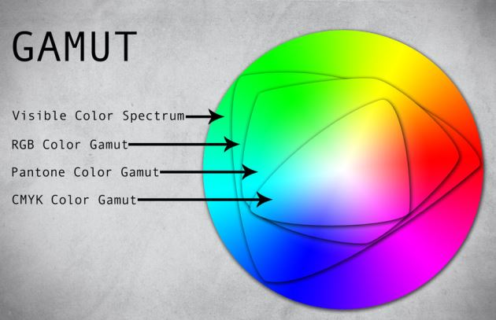
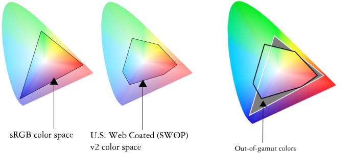
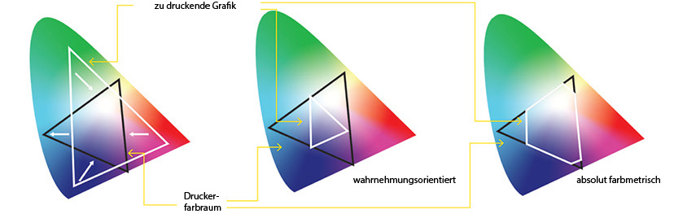
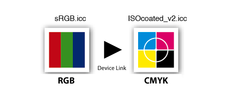

Alltagsproblem eines Mediengestalters

Meist müssen Farbräume mit höherem Informationsumfang (RGB) zu einem solchen mit niedrigerem Umfang (CMYK) transformiert werden.
PREISFRAGE:
Wie kriegt man das so hin, dass die Farben weitgehend erhalten bleiben?
Definition Farbraumtransformation/Gamut Mapping
Farbraumtransformation (auch: Gamut Mapping) bezeichnet die Umsetzung von zwei beliebigen Farbräumen ineinander.
Das Gamut Mapping ist also die Transformation der Farbräume. Der Gamut (englisch: Tonleiter, Skala, Farbpalette) ist die Menge aller Farben, die ein Gerät (Monitor, Drucker, Scanner, Film) darstellen, wiedergeben und aufzeichnen kann.
Ist der ursprüngliche Farbraum größer als jener, in den umgewandelt werden soll, ist es sehr wahrscheinlich, dass bei der Reproduktion bestimmte Farben vom Zielmedium nicht korrekt abgebildet werden. Man muss also immer einen Kompromiss eingehen.
Um die Abweichungen so weit wie möglich in Grenzen zu halten, nutzt man die sog. Rendering Intents.
Rendering Intents
Die wesentlichen Aufgaben des Colormanagement ist es, die Gamuts verschiedener Geräte so aufeinander abzubilden, dass möglichst wenige störende Farbverschiebungen und Abrisse entstehen.
Rendering Intents definieren, auf welche Art und Weise diese Überführung der einzelnen Farben eines Bildes von einem Farbraum in den anderen stattfinden soll. Vor allem dann, wenn Bilder aus einem größeren in einen kleineren Farbraum transformiert werden, wie das meist bei der RGB-CMYK-Umwandlung der Fall ist, erhält man je nach gewähltem Rendering Intent ganz unterschiedliche Resultate.
Je nachdem, welches Ziel mit der Farbtransformation erreicht werden soll, wird ein jeweils diesem Ziel entsprechender Rendering Intent gewählt. Vom ICC wurden deshalb vier verschiedene Rendering Intents festgelegt.
Es sind dies der wahrnehmungsorientierte, der relativ farbmetrische, der absolut farbmetrische und der sättigungserhaltende Rendering Intent.
wahrnehmungsorientiert
Dieser Rendering Intent passt die Farben so an, dass die Anmutung der Farbunterschiede erhalten bleibt. Auf diese Weise werden Bilder auch in einem kleineren Farbraum so dargestellt, dass die Bilder als möglichst originalgetreu empfunden werden. Dies bedeutet, dass Farben nicht immer auch identisch dargestellt werden. Dies ist nötig, um die Farbunterschiede in einem Bild so zu erhalten, dass im Gesamtergebnis ein gleichwertiger Eindruck eines Bildes entsteht.
relativ farbmetrisch
Mit dieser Art der Farbraumtransformation wird keine Rücksicht auf die Farbunterschiede innerhalb eines Bildes genommen.Wird ein Bild mit diesem Rendering Intent transformiert, so werden die Farben, die im kleineren Farbraum dar- gestellt werden können, exakt so dargestellt wie im Original. Farben, die nicht dargestellt werden können, werden einfach «abgeschnitten» und so reproduziert, wie es möglich ist. Dieser Intent berücksichtigt die Farben des Bedruckstoffes nicht.
absolut farbmetrisch
Dieser Rendering Intent funktioniert gleich wie der relativ farbmetrische, jedoch mit dem Unterschied, dass der Weißpunkt (Bedruckstoff/Papier) mitdargestellt wird. Aus diesem Grund eignet sich dieser Rendering Intent besonders, um auf hochweißen Proofpapieren sowohl die Farbdarstellung eines (kleineren) Farbraums wie auch den Weißpunkt (Bedruckstoff/Papier) zu simulieren. Er ist jedoch ungeeignet, um Bildmaterial von einem größeren in einen kleineren Farbraum zu transformieren.
sättigungserhaltend
Der vierte Rendering Intent ist vorwiegend für Businessgrafiken gedacht, die möglichst «leuchtend» dargestellt werden sollen. Bei diesem Rendering Intent wird weniger auf die «Farbtreue» als auf die Sättigung Wert gelegt. Er wird in der Farbmanagementpraxis sehr selten angewandt und ist beim farbmanagenden Anwender eher unbeliebt, da beim Farbmanagement ja normalerweise mehr auf kontrollierbare als auf leuchtende, satte Farben Wert gelegt wird.
Grenzen der Farbraumtransformation
Dank ICC-Farbprofilen lassen sich Daten von einem Farbraum in einen anderen transformieren, wobei die Farbwiedergabe so gut wie möglich erhalten bleibt. Problematisch ist jedoch, von einem CMYK in ein anderes CMYK zu konvertieren. Dann geht nämlich der Separationsaufbau im Schwarzkanal verloren.
Der vierte Kanal eines CMYK-Farbraums ist farbmetrisch «redundant». Das heißt, er ist für eine eindeutige Festlegung der Farbe im Prinzip überflüssig. Mehrere äquivalente Kombinationen von CMYK-Werten beschreiben jeweils ein und dieselbe Farbe. Welcher Separationsaufbau – vor allem welcher Anteil Schwarz – gewählt wird, kann zwar technische Auswirkungen haben, wird aber bei der Transformation via PCS nicht berücksichtigt.
Um dieses Manko zu beheben, sind Device-Link-Profile entwickelt worden. Diese transformieren die Farbwerte mittels nur einer Farbtabelle direkt vom Quell- in den Zielfarbraum. Durch den Verzicht auf den PCS fällt hier aber auch die Möglichkeit weg, Farben zwischen beliebigen Profilen zu konvertieren; ein Device-Link-Profil beherrscht jeweils nur genau eine ganz bestimmte Transformation, von Farbraum A nach Farbraum B. Schon für die Gegenrichtung, von B nach A, braucht es ein separates Device-Link-Profil. Ebenso für jeden anderen Quell- oder Zielfarbraum.
Weiterführende Fragen
- Wozu wird Farbtransformation gebraucht?
- Welches Probleme ergeben sich bei der Farbtransformation von CMYK nach RGB?
- Welcher Rendering Intent bietet sich bei der Konvertierung einer Digitalfotographie zu einer Druckdatei?
- Welchen Vorteil bieten Device-Link-Profile?
- Wo liegt der Nachteil eines Device-Link-Profils?